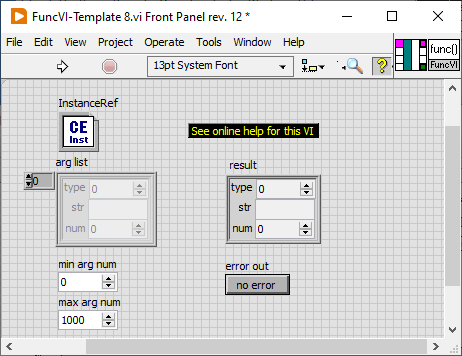
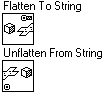

Also see VIs to develop FuncVIs | FuncVI Examples
To develop a function that can be used in a script (CalcExpress or CSE), you should create a FuncVI that performs the function. See Function Implementations topic for more information.
As CalcExpress calls a FuncVI, it passes the parameters specified in the function call to the FuncVI. There is a set of VIs that helps to access function arguments and handle possible errors. When FuncVI completes, it returns a value that represents the function's value, which can be used in a script for further evaluation. If a FuncVI needs to return more than one value, it should return additional values through variables. Use VarMan VIs to access variables. For more information on how CalcExpress exchanges parameters with FuncVIs see Description of FuncVI controls and indicators below (click here).
CalcExpress uses dynamic method to call FuncVIs. To execute a FuncVI, CalcExpress opens a strictly-typed VI reference to the FuncVI (if not opened yet), and runs "Call By Reference Node" primitive to call the FuncVI. A FuncVI must comply with the following requirements:
A FuncVI name must follow a uniform naming convention, as follows:
FuncVI-FunctionName.vi
, where FunctionName is a name of the function to be called from a script. FunctionName can consist of alphanumeric characters and the underscore ( _ ). See Function Call Syntax topic for more information.
CalcExpress needs to know the location of a FuncVI when it dynamically opens a VI reference to it. Use Func - FuncVI Search Paths.vi to define paths in which you store your FuncVIs.
Alternatively, you can use the Static VI References in your VIs that refer to the desired FunVIs. In this scenario, the FuncVIs are loaded together with your VIs, and their location does not matter.
A FuncVI must be runnable as a sub-VI when it's called.
CalcExpress uses strictly-typed VI reference to call FuncVIs. This means that all FuncVIs must have the same controls, indicators, and connector pane to be successfully called. To create a FuncVI that meets this requirement, use either FuncVI-Template (see below) or one of FuncVIs supplied with CalcExpress.

The figure shows the typical FuncVI Front Panel when you open the FuncVI-Template.vit. This VI has controls, indicators, and connector pane that every FuncVI must have. Save your FuncVI with a name that complies with the rule of FuncVI naming.
Remark. To open the FuncVI-Template.vit, use the CalcExpress >> Open CalcExpress Template... utility in the Tools menu.
InstanceRef control
As a CalcExpress VI calls a FuncVI, it passes a unique reference to itself (a reference to the instance of the caller) to FuncVI via this control. This reference is required for FuncVI to operate within the scope of the expression evaluated by the calling CalcExpress instance.
arg list control
CalcExpress passes actual parameters to FuncVI through this control.
arg list is an array of clusters, with the same number of elements as the number of parameters in the function call. Each element of the array contains both the value and the datatype code of the respective parameter in the function call. The order of elements in the array matches the order in which the parameters are listed in the function call.
Typically, CalcExpress passes actual parameters to FuncVIs by values. However, if a parameter is an identifier (a variable name), CalcExpress passes the variable name to the FuncVI. Thus, FuncVI has the ability to both read from and write to variables.
An element of arg list is a cluster with the following members:
type contains a datatype code of the parameter. Click here for general information on data types.
str contains either a string value of the parameter or a variable name if type is equal to 2 (Identifier). The value is valid unless type is equal to 1 (DBL Number). If the parameter data type is either one of Complex data types or a user-defined data type, str contains a value represented in the Flattened-To-String format.
num contains numeric value of the parameter. It is valid if only type is equal to 1 (DBL Number).
min arg num control
CalcExpress uses default value of this control to determine the minimum number of parameters on which a FuncVI can operate. CalcExpress evaluates this control during a parsing of a script to validate number of actual parameters in a function call. CalcExpress does not use this control to execute a FuncVI. Make the default value of min arg num equal to minimum number of parameters your FuncVI requires
max arg num control
CalcExpress uses default value of this control to determine the maximum number of parameters on which a FuncVI can operate. CalcExpress evaluates this control during a parsing of a script to validate number of actual parameters in a function call. CalcExpress does not use this control to execute a FuncVI. Make the default value of max arg num equal to maximum number of parameters your FuncVI requires.
result indicator
A FuncVI returns the function value through this indicator. The value can be of any data type, both predefined and user-defined data types are allowed.
The result indicator is a cluster with the following members:
type must contain the datatype code of the return value. This code must match the actual format of the return value, otherwise CalcExpress might fail to handle it correctly.
str has to contain either the immediate string value, if a function returns a string, or a value represented in the Flattened-To-String format, if the return value has either of Complex data types or a user-defined data type. CalcExpress ignores the value of str if type is equal to 1 (DBL Number).
num has to contain a numeric value. CalcExpress ignores this value unless type is equal to 1 (DBL Number).
error out indicator
A FuncVI returns an error status in this indicator. CalcExpress does not validate the number of arguments and their data types when calling a FuncVI function. A FuncVI must validate the parameters it receives and generate a CalcExpress error if it is unable to operate on them. Typically, such errors are similar to syntax errors in programming languages, such as invalid number of parameters, incorrect parameter data types, undefined variables, and so on.
To produce a CalcExpress error, a FuncVI puts the error description to the Error Protocol and returns TRUE in error out. CalcExpress returns both the error status and the error description when it completes evaluating the expression that caused the error.
Each CalcExpress instance has its own context for storing intermediate data. An Error Protocol is a string member of the context that retains error messages. Similar to the overall context, an Error Protocol is unique to each CalcExpress instance.
If a FuncVI encounters an error, it returns the error status and posts the error description to the Error Protocol of the CalcExpress instance that initiated its call. A CalcExpress instance returns the contents of its Error Protocol as an error description if it terminates evaluation with an error condition.
CalcExpress VIs designed to support FuncVI development handle the most typical errors that can occur. However, if an application requires handling errors that are specific to custom FuncVIs, the Exp - Error handler.vi can be used to directly access the Error Protocol content.
 |
CalcExpress exchanges data (parameter values and function results) with FuncVIs in the LabVIEW Flattened-To-String format if the data has either one of the Complex data types or a user-defined data type. The native Flatten To String and Unflatten From String LabVIEW functions are used to convert data to and from the Flattened-To-String format. Note that the CalcExpress Kernel validates the format of flattened data for predefined data types only. |